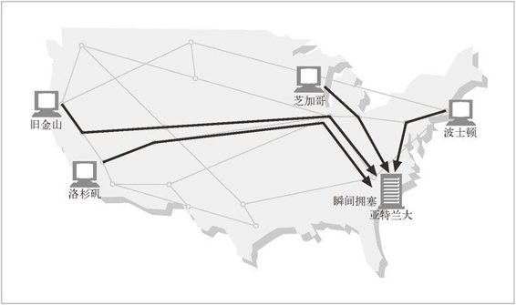

7.3 瞬间拥塞
缓存在破坏瞬间拥塞（Flash Crowds）时显得非常重要。突发事件（比如爆炸性新闻、批量 E-mail 公告，或者某个名人事件）使很多人几乎同时去访问一个 Web 文档时，就会出现瞬间拥塞（参见图 7-2）。由此造成的过多流量峰值可能会使网络和 Web 服务器产生灾难性的崩溃。

图 7-2 瞬间拥塞会使 Web 服务器过载
1998 年 9 月 11 日，详细描述 Kenneth Starr 对美国总统克林顿调查情况的“Starr 报告”发布到因特网上去的时候，美国众议院的 Web 服务器每小时收到了超过三百万次的请求，是其平均服务器负荷的 50 倍。据报道，新闻站点 CNN.com 的服务器每秒钟平均会收到超过 50 000 次的请求。